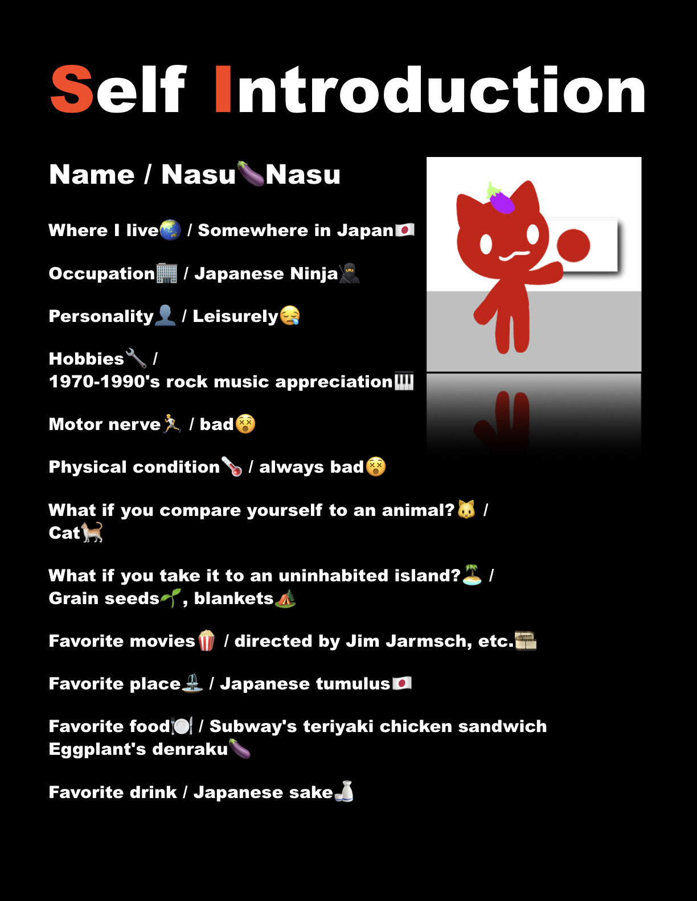

~
Self-introduction
Welcome🍀
Hello! My name is Nasu_Nasu🍆
I create videos and flyers to share the uniqueness of Japanese culture and cuisine with people around the world. 🌏
I’d like to introduce unique, healthy fermented foods—and ideally other Japanese foods or aspects of Japanese culture—through short videos and flyers.
Please feel free to incorporate them into your daily life in whatever way suits you best.👍
I use images borrowed from free stock photo sites, as well as materials I’ve drawn or photographed myself, which I edit manually using a stop-motion app.🎞️
I only use AI for the audio and translation.
For the flyers, I also use AI only for translation🤖; I design them by hand, coming up with the concepts myself.👋🔧

It's a slow pace, but if you don't mind, please take a look.🍀
About the world view of cherry blossoms in Japan🌸